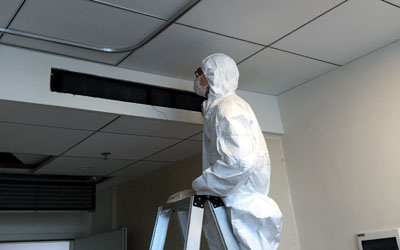
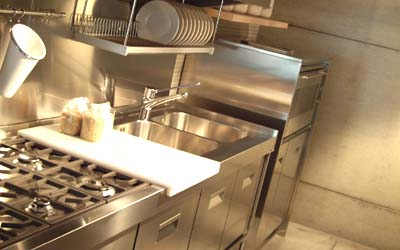
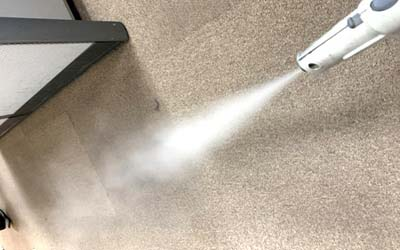

除塵
| 灰塵：家里面灰塵組成有衣服、棉被、床單纖維，人體皮膚、毛髮所組成，灰塵量高，以經驗值來說，大約可增加5-10倍的菌量，因此除塵是第一要件，原因在於灰塵能將病菌攜帶，藉由人群走動造成氣流擾動，漂浮在空氣中。 |
| 除塵注意事項： |
| 自動掃地機器：其表演效果佳，但實際效果並不佳，並不能把帶有靜電灰塵或油酯灰塵掃除，另外也必需正確使用，其初級濾網須每周清洗，內部濾網更換和使用率及灰塵率有關，當有空氣傳染病毒下，不建議使用，會造成細菌病毒到處傳播。 |
| 吸塵器：使用時須將窗戶打開，因為其出風口氣流造成灰塵更易擾動，不然灰塵會在室內漂浮從30-120分鐘不等，使用時也不要開除濕機，因為越乾燥空氣越會造成灰塵飄起，購買時應選擇出風口離地遠、且是風口向上為主，其內部濾網、紙袋需定期更換。 |
| 除塵墊：如果需穿著鞋子處，建議使用除塵地墊，以本公司40年經驗值，如正確使用地墊，可排除室內60-80%的地面灰塵量，但地墊須清洗吸塵，日期次樹則是依照使用量而定，基本上每周必須吸塵。 |
| 醫療級和工業及哪個好：消費者往往以為醫療級就是比較好，其實不然，因為工業級也很多等級，其最高等級是比醫療級優很多，所以不要看到醫療級就認為是最高等級，而且在清淨過濾部分，並沒有所謂醫療級規範，他都只是工業級比較高規範中某一章節，因此須看規格為主。 |

除濕乾燥
| 除濕：降低室內溼度是可降低黴菌滋生，他是在自然界無所不在菌種之一，不可能被消滅，其生長環境為主，它需要氧氣、溫暖溫度(20度C)、高濕度(80%)，狀況下繁殖最快，因此使除濕、通風換氣是必須要件，黴菌孢子酒精殺不死，可用次氯酸鈉(漂白水)擦拭，浴室中天花板常因濕氣，較無法立即乾燥，每季應使用漂白水擦拭消毒。 |
| 乾燥:：在有水處將其乾燥，像是在流理台、浴室，如果未清理，這些地方易滋生腸胃道相關病原，例如在流理台，是綠膿桿菌孳生處，健康人對其害還好，但對小孩、體弱、老人、免疫差等群體就有危害，在廚房常使用抹布、海綿、菜瓜布、砧板，都須清洗乾淨保持乾燥。 |
水活性：水是生命起源，水活性（Water Activity，Aw），指在密閉空間中，某食品的飽和蒸氣壓與相同溫度下純水的飽和蒸氣壓的比值，純水是1水活性越低越不利細菌生長，也可說明抹布上細菌滋生能力，漢堡放在沙漠中不太會發霉，但放在濕度高處，就容易發霉腐壞，因此家裡保持乾燥是很重要的。 |
| 隔離：不管是熟食生食，放入冰箱都必須保鮮膜密封包裝，在低溫狀能降低或抑制細菌病毒生長，但放太久還是會發霉，以華人為主家庭，有一半家庭以上冰箱內細菌都超標，甚至東西放到壞掉，導致細菌代謝產生硫化氫、甲基胺等惡臭氣體，另外有部分水果不能放在密閉空間，會釋放乙烯，這氣體會加速水果熟化腐爛，其中以洋蔥最為明顯，為此已有電冰箱有開發此除菌除乙烯冰箱，讓其保鮮期更長久，家中冰箱至少每季需清理一次，除了可順便可將過期食物丟棄，冰箱因為未有多餘食物，壓縮機負載較小，也可省電、延長冰箱使用壽命。 |

高溫、蒸氣
| 善用蒸汽熨斗：高溫蒸氣能夠殺死許多細菌病毒，且最環保，往往家中床墊、布質座椅、除了日曬以外，實在很難想像能夠如何處理，此時可用蒸氣熨斗，但須注意，當處理過後，需拿吸塵器將處理過表面清理，它可清除上面灰塵外，還可將多餘濕氣帶走，以蒸汽熨斗其蒸氣溫度介於90-100度間，熨斗部分則在150-250度間，這部分溫度足以殺死許多細菌病毒，使用時須注意材質，調整適當溫度，免得被消毒物其材質受損。
殺塵蟎利器：床舖、棉被、枕頭、地毯、布沙發、玩偶、窗簾、毛巾...等等都是其安居樂業處，塵蟎因人而異，會引發氣喘、過敏性鼻炎、過敏性結膜炎、打噴嚏流鼻水與異位性皮膚炎等，基本上和人類體質有關，有過敏體質，其量就算少，就能夠致病，在取樣每克灰塵中，從數百到數萬隻都有，台灣地區濕度、氣溫，一年四季都適合其生長，2008年台北市衛生局調查的統計數據中，對國小一年級學童過敏原檢測，塵蟎占90%,以這比例非常高，雖然清洗也是去除塵蟎方法之一，但並非家中所有東西都能清洗，再者，清洗完後也須烘乾，將其殘留在上屍體排泄物更徹底去除。 使用蒸汽熨斗除了可去除塵蟎(40度高溫就死去)，並且也可將其排泄物、屍體、蛋白質質變，讓其過敏有機體失效，在使用後使用吸塵器需用具有HEPA Filter為佳，可將其屍體排泄物等清除，以及將內部濕氣排除，使塵蟎更不易生存。 |
高溫：清洗抹布、水壺、奶瓶，最佳方式就是水煮，用高溫可輕易將污垢去除，並能殺菌，尤其現在許多健身運動人士，使用水壺頻率高，在每天使用情況下，如果沒有定期清洗，其內部水細菌其量質都高處正常飲用水菌量數倍至數十倍，需特別注意。 |